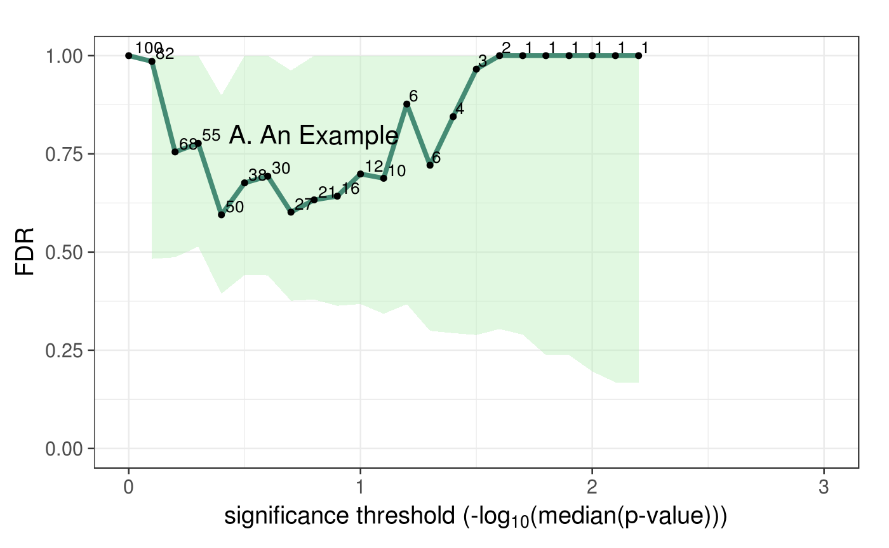

This function plots FDR point and CI estimates over a sequence of possible significance thresholds. Results from fdrTbl() can be plotted directly as input to FDRplot.
FDRplot(plotdat, lowerbound, upperbound, ymax = 1, annot = "", xpos = 0.8, ypos = 0.8, outfile = FALSE)
| plotdat | a table that is returned from fdrTbl(), or results formated in the same way. |
|---|---|
| lowerbound | -log10(p-value) lower bound for the x-axis of the plot. |
| upperbound | -log10(p-value) upper bound for the x-axis of the plot. |
| ymax | upper limit for range of the y-axis. |
| annot | annotation text to be added to plot area. |
| xpos | x-axis position for annot |
| ypos | y-axis position for annot |
| outfile | either 'FALSE' or the path/name of a new pdf file to be generated by the function. |
ggplot2 object
Millstein J, Volfson D. 2013. Computationally efficient permutation-based confidence interval estimation for tail-area FDR. Frontiers in Genetics | Statistical Genetics and Methodology 4(179):1-11.
Millstein J, Volfson D. 2013. Computationally efficient permutation-based confidence interval estimation for tail-area FDR. Frontiers in Genetics | Statistical Genetics and Methodology 4(179):1-11.
ss = 100 nvar = 100 X = as.data.frame(matrix(rnorm(ss*nvar),nrow=ss,ncol=nvar)) Y = as.data.frame(matrix(rnorm(ss*nvar),nrow=ss,ncol=nvar)) nperm = 10 myanalysis = function(X,Y){ ntests = ncol(X) rslts = as.data.frame(matrix(NA,nrow=ntests,ncol=2)) names(rslts) = c("ID","pvalue") rslts[,"ID"] = 1:ntests for(i in 1:ntests){ fit = cor.test(X[,i],Y[,i],na.action="na.exclude", alternative="two.sided",method="pearson") rslts[i,"pvalue"] = fit$p.value } return(rslts) } # End myanalysis # Generate observed results obs = myanalysis(X,Y) # Generate permuted results perml = vector('list',nperm) for(p_ in 1:nperm){ X1 = X[order(runif(nvar)),] perml[[p_]] = myanalysis(X1,Y) } # FDR results table myfdrtbl = fdrTbl(obs$pvalue,perml,"pvalue",nvar,0,3) # Plot results FDRplot(myfdrtbl,0,3,annot="A. An Example")#> Warning: Removed 8 rows containing missing values (geom_path).#> Warning: Removed 8 rows containing missing values (geom_point).#> Warning: Removed 8 rows containing missing values (geom_text).